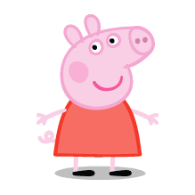
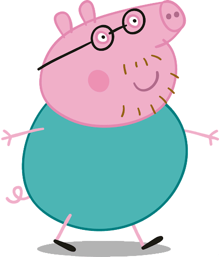
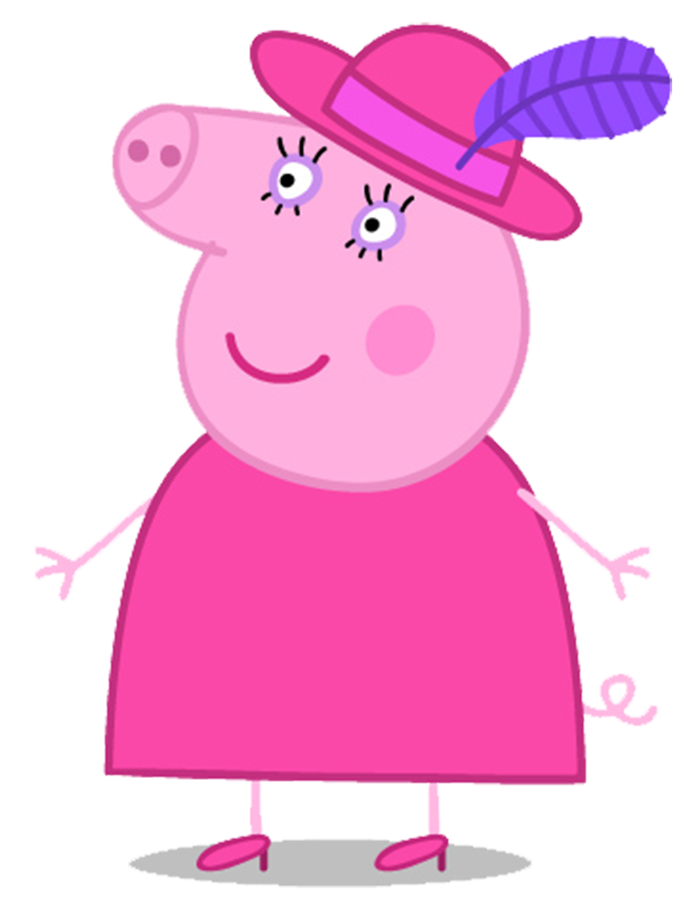
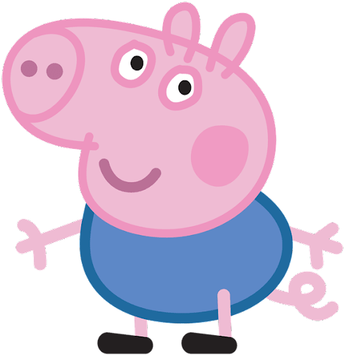

| PEPPA PIG |
| PAPA PIG |
| MAMA PIG |
| GEORGE |
| PEPPA PIG | |
|---|---|
|  | Peppa Pig es hija legitima de una dinastia de cerdos apellidados "Pig",es la mayo de 2 hermanos y la protagonista de esta historia, es una niña agradable, graciosa, las ganas de aprender y comerse el mundo le ha llevado a ser una de las mejores protagonistas de esta serie. Como curiosidad, te gustaria saber que se puede comer acompañado de pan con tomate. |
| PAPA PIG | |
|---|---|
|  | Papa Pig es el padre de la dinastia "Pig", el "manda mas" de la familia, su amigable personalidad y su caracter fuerte y robusto, pero a la vez torpe y despistado le ha convertido en uno de los personajes mas queridos por la comunidad. Dato curioso, es el primer cerdo en toda a historia en tener menos de 6 dioctrias, y a su vez es el primer cerdo con gafas |
| MAMA PIG | |
|---|---|
|  | Mama Pig, uno de los personajes de mas apoyo de la serie, esto puede ser gracias a su caracter de buena persona. Ella misma en varias declaraciones ha afirmado estar a favor del feminismo, ya que es la delegada del comite feminista de la ciudad. Su Trabajo es dar golpes con su ordenador desde casa. Un dato Curioso de ella es que fue la que puso de moda las pamelas y los tacones en las cerdas. |
| GEORGE | |
|---|---|
|  | George, es uno de los protagonistas mas misteriosos de la serie, ya que nunca habla ya que no tiene la capaciodad suficiente y ademas nunca dicen su apellido despues de su nombre, como su hermana o sus padres, muchos afirman que es un hijo bastardo proventiente de alguna granja lejana Como curiosidad, es el cerdo mas pequeño del mundo, su altura ronda los 30cm |